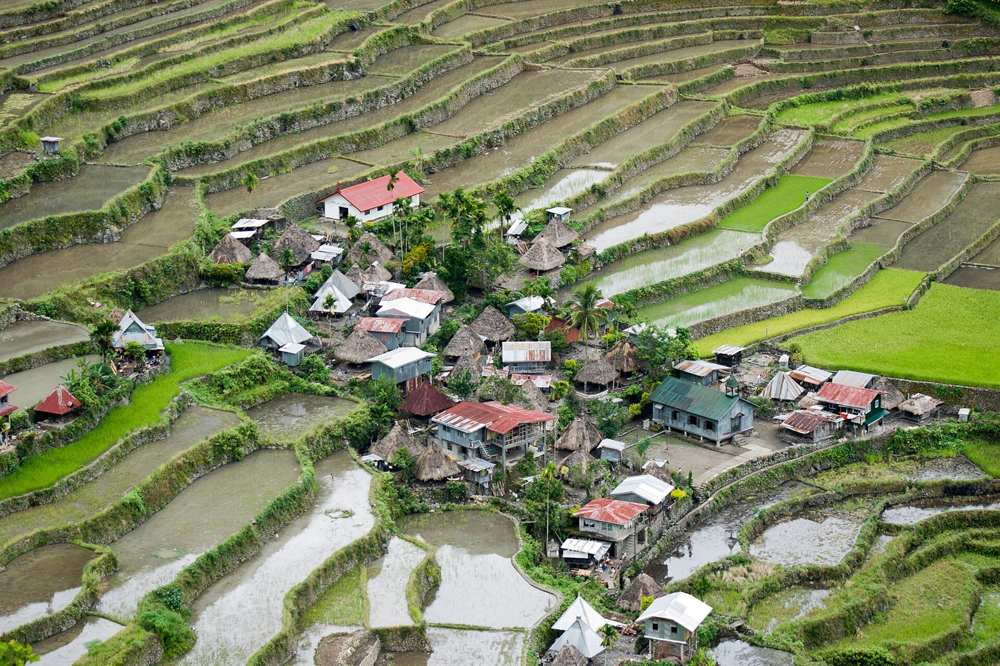

Agriculture is the science, art and practice of cultivating soil, growing crops and raising livestock to produce food, fiber, fuel and raw materials for human use. It encompasses everything from small scale subsistence farming to commercial agribusiness, aquaculture and forestry.

Agriculture plays a vital role in the Philippines, serving as one of the main sources of food, livelihood, and economic growth. It involves cultivating crops, raising livestock, and producing various agricultural goods that support the daily needs of millions of Filipinos. Beyond providing food, agriculture also creates employment opportunities, supports local communities, and contributes to the country's development. It remains an essential part of Filipino life and a foundation for a sustainable future.

Pre-Colonial
Spanish Era
American Era
Post-War Green Revolution
Modern Era